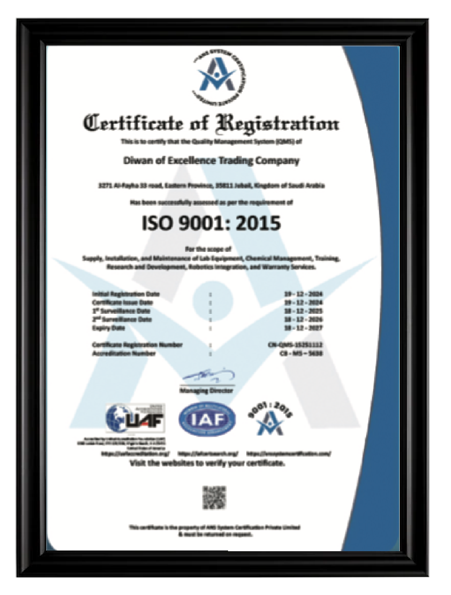
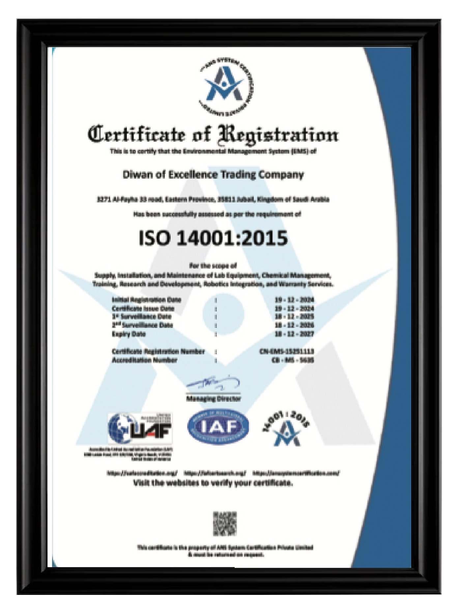
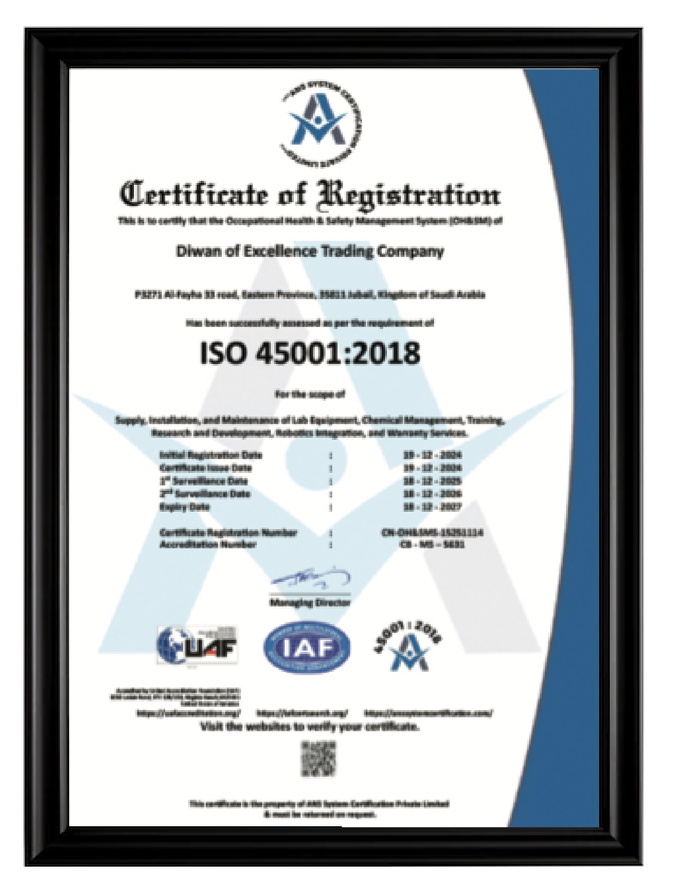
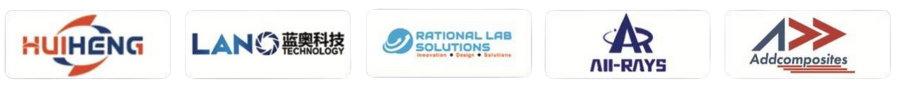
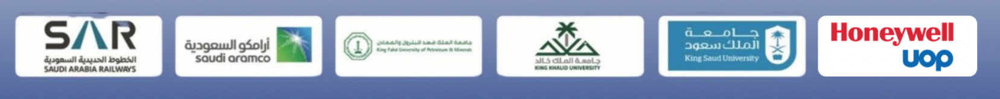

A Saudi technology, engineering, manufacturing, and knowledge group.
DIWAN is a Saudi technology, engineering, manufacturing, and knowledge group created to convert expertise and advanced technologies into practical solutions, products, and industrial capabilities. The group operates through three integrated business arms with distinct responsibilities and one shared vision.
Bridging knowledge and industrial implementation
DIWAN exists to bridge the gap between scientific knowledge, engineering direction, technology access, and industrial implementation. By connecting these capabilities, the group supports research organizations, industrial companies, government entities, technology developers, manufacturers, and project owners across Saudi Arabia.
Consulting, technology, and manufacturing — one pathway
The group combines consulting that creates engineering direction, technology services that provide systems and practical solutions, and manufacturing that converts technology into products, capabilities, and industrial value.
Contributing to Saudi industrial and technological development
DIWAN contributes to Saudi industrial and technological development by supporting local capability, technology transfer, advanced manufacturing, research and development, engineering excellence, and long-term technical partnerships.
Local Capability
Building Saudi technical and industrial capability across the value chain.
Technology Transfer
Bringing advanced technologies and know-how into the Kingdom.
Advanced Manufacturing
Localizing manufacturing and materials-processing capability.
Long-Term Partnerships
Engineering excellence built on lasting technical relationships.
Three specialized, complementary entities
DIWAN operates through three specialized and complementary business arms. Each entity retains its own role and expertise while sharing one group identity, one technical ecosystem, and one progression from knowledge to industrial impact.
DIWAN Engineering & Technology Company
Advanced technologies, equipment and technical solutions for laboratories, R&D, and industrial applications.
Learn moreSaudi Advanced Composites
Materials, prototypes, manufactured components, and localized industrial capabilities.
Learn moreDiwan of Excellence Engineering Consultations
Chemical and materials consulting, technical studies, and engineering solutions for process and product projects.
Learn moreQuality, environmental, and safety management, independently certified





A Saudi technology, engineering, manufacturing, and knowledge group.
From Knowledge to Technology. From Technology to Industry.